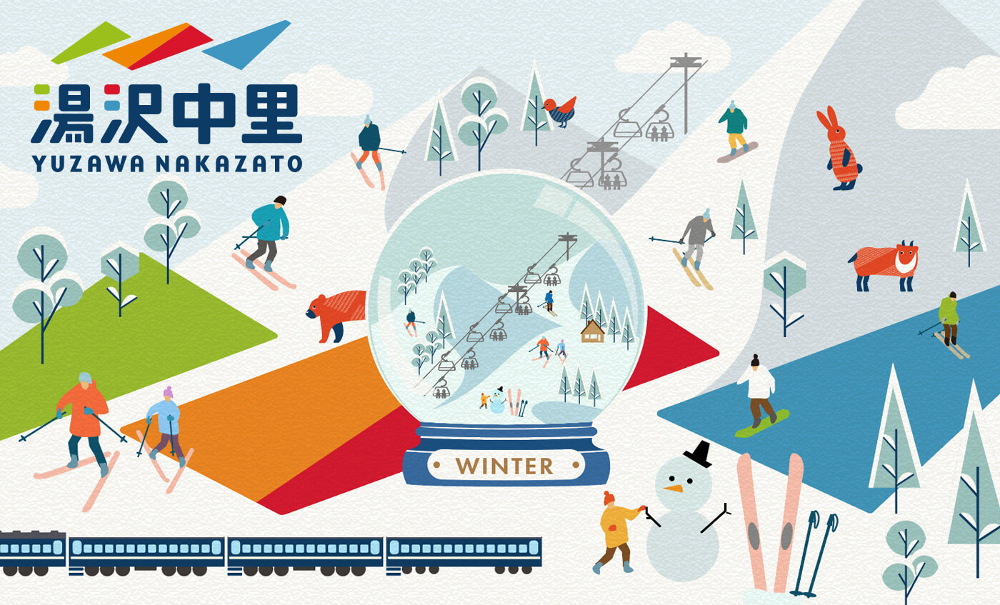
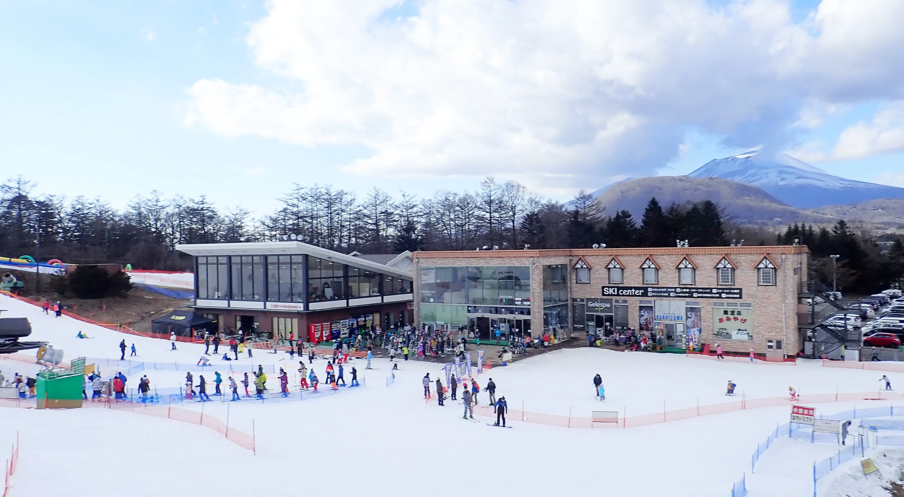
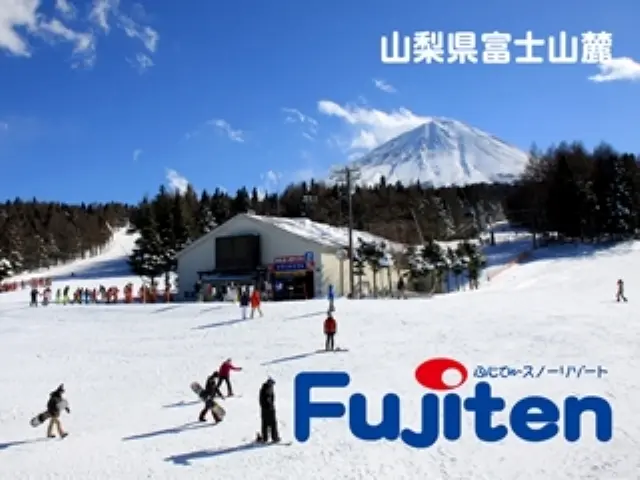

新潟県
湯沢中里スノーリゾート
広い斜面と雪質が魅力のスキー場。初心者から上級者まで楽しめるバラエティがあり、温泉地としても人気があります。
いい感じの場所をまとめました

広い斜面と雪質が魅力のスキー場。初心者から上級者まで楽しめるバラエティがあり、温泉地としても人気があります。

軽井沢ならではの落ち着いた雰囲気と、比較的アクセスしやすい立地が魅力です。スノーリゾートとしてのブランド力も高いです。
東京からのアクセスが良く、日帰りや短時間の旅行にも向いています。滑りやすさと家族向けの設備が好評です。
雪質の良さと温泉がセットになった定番の名所。初心者には安心感があり、上級者にも満足できるコースがあります。

日本有数の名湯・草津温泉に隣接した歴史あるスキー場。初心者向けの緩斜面からパウダースノーが楽しめる上級者向けコースまで備わっています。

富士山の麓にあるスノーリゾートで、景色と雪の質が魅力です。日帰りでも満足できる比較的アクセスしやすい施設です。